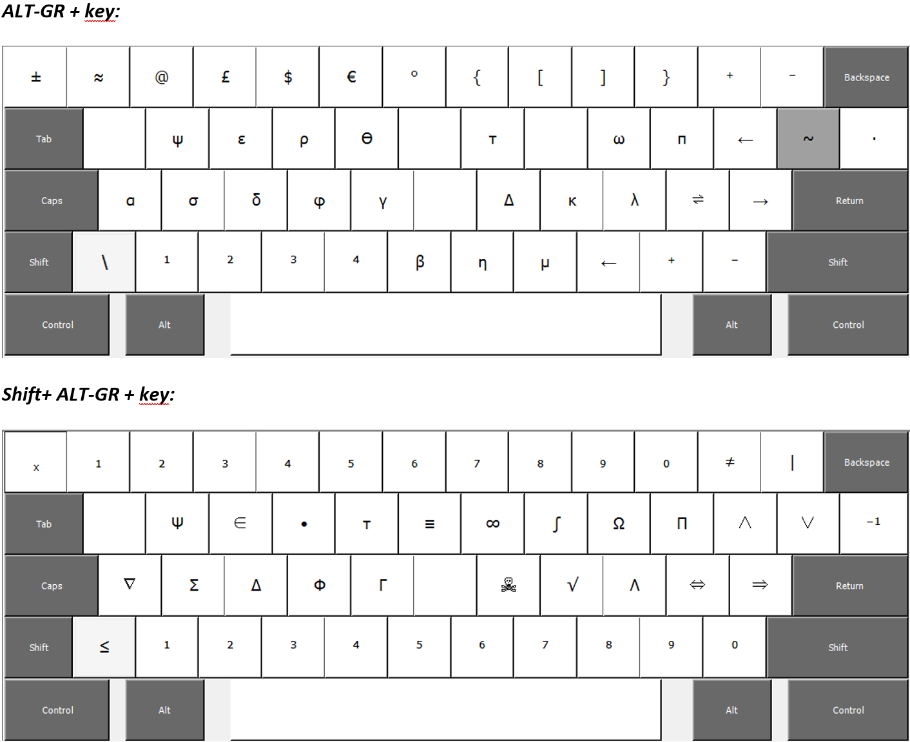
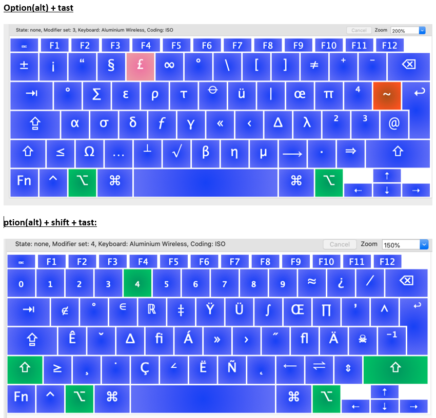

Udvid dit tastaturlayout
Som supplement til autocorrect kan du skrive kemiske symboler direkte fra tastaturet – også når du kommenterer en PDF-fil eller er i en browser. Jeg har personligt ikke oplevet ulemper, men det er altid muligt at skifte tilbage til standard dansk på nogle få sekunder.
Tastatur for Windows
Windows-tastaturet er udstyret med en masse tomme genvejstaster. Du kan normalvis nemt downloade og installere mit tastaturlayout – men kig gerne i manualen, der hjælper dig på vej. I manualen kan du også få et overblik over, hvor genvejene er placeret.
Du vil måske irritere dig over mine valg af genveje. I så fald kan du overveje at lave dit eget design med Microsofts „Keyboard Layout Creator“.

Tastatur for MacOS
Jeg indrømmer med det samme, at jeg ikke har forstand på MacOS! Jeg forsøgte alligevel at lave et tastaturlayout, som virker på MacOS.
Ikke helt pålideligt: Resultatet var desværre ikke helt pålideligt, idet tastaturlayoutet på nogle computere skifter tilbage til almindeligt dansk, når Word er åben. Nærlæs manualen, hvis du har mod på at prøve. Du kan også overveje at lave dit eget tastaturdesign vha. freeware-programmet Ukulele.
